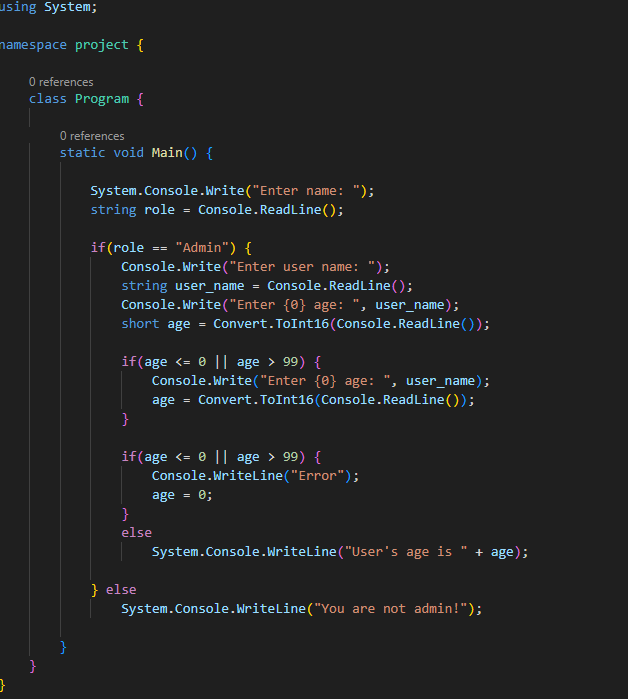
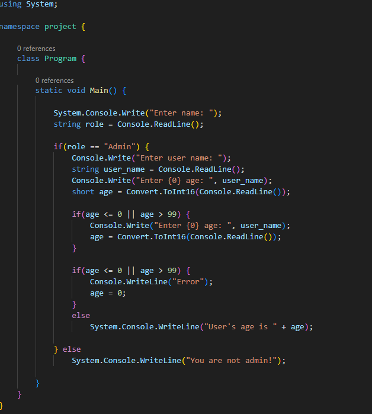
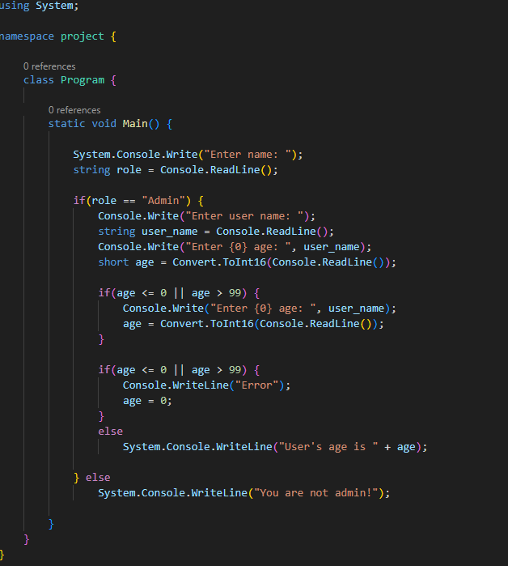
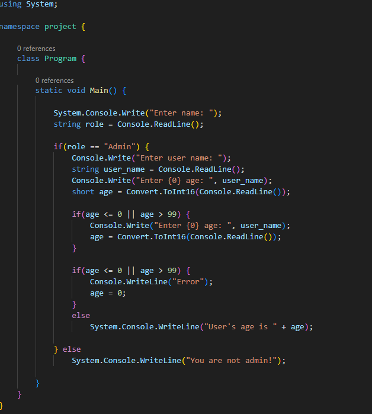

Привет, меня зовут Лисинкий Ярослав, и я - специалист в области информационных технологий с 1 летним опытом. Моя страсть к кодированию и разработке программного обеспечения вдохновляет меня каждый день. Мои навыки включают я учусь в данный моент на React . У меня есть два проекта (можете увидеть их ниже и посмотреть). Я стремлюсь к постоянному обучению и развитию, всегда готов осваивать новые технологии и инструменты. Я командный игрок, готовый сотрудничать с коллегами, чтобы достичь общих целей. Моя цель - создавать инновационные решения, улучшая жизнь пользователей и оптимизируя бизнес-процессы. Я горжусь своей работой в IT и готов внести свой вклад в ваш проект. Буду рад обсудить, как я могу помочь достичь ваши цели в области информационных технологий.
Привет, меня зовут Лисинкий Ярослав, и я - специалист в области информационных технологий с 1 летним опытом. Моя страсть к кодированию и разработке программного обеспечения вдохновляет меня каждый день. Мои навыки включают я учусь в данный моент на React . У меня есть четыри проекта (можете увидеть их ниже и посмотреть). Я стремлюсь к постоянному обучению и развитию, всегда готов осваивать новые технологии и инструменты. Я командный игрок, готовый сотрудничать с коллегами, чтобы достичь общих целей. Моя цель - создавать инновационные решения, улучшая жизнь пользователей и оптимизируя бизнес-процессы. Я горжусь своей работой в IT и готов внести свой вклад в ваш проект. Буду рад обсудить, как я могу помочь достичь ваши цели в области информационных технологий.